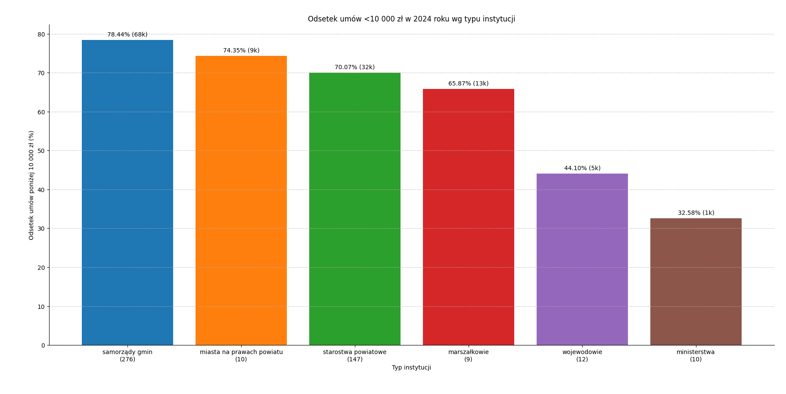
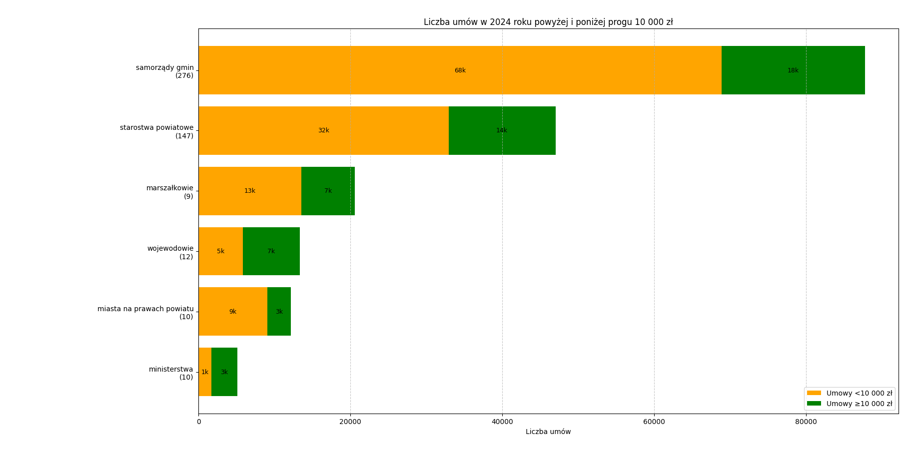
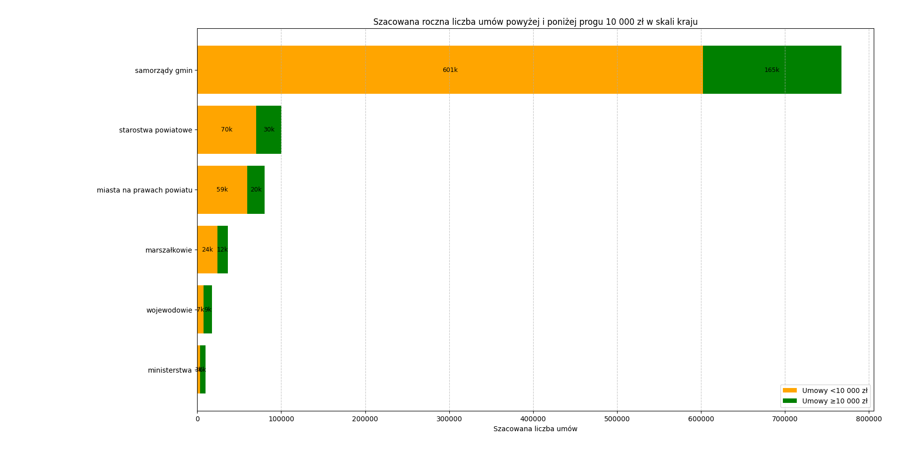

Liczba umów zawieranych przez gminy, powiaty, województwa i ministerstwa w 2024 roku
Na podstawie danych zebranych od ministerstw, wojewodów i próby jednostek samorządowych, dotyczących liczby umów poniżej i równo lub powyżej progu 10 000 zł. W statystykach ujęto tylko te przypadki, w których uzyskano relatywnie pewne odpowiedzi na pytania o liczbę umów (pytania 1 i 2).
Informacje ogólne
Zapytaliśmy:
399 losowych gmin (wiejskich, miejskich i miejsko-wiejskich)
189 losowych starostw powiatowych
16 losowych miast na prawach powiatu
16 marszałków
16 wojewodów
19 ministerstw
Razem: 655 organów
Odsetek umów poniżej 10 000 zł w 2024 roku według typu urzędu
Poniższy wykres przedstawia procentowy udział umów o wartości < 10 000 zł w całkowitej liczbie umów zawartych w 2024 roku:

Rys. 3. Odsetek umów < 10 000 zł w 2024 roku według typu urzędu (w nawiasach liczba instytucji).
Samorządy gmin (276 uwzględnionych odpowiedzi): 78,44 % umów poniżej 10 000 zł (68 000 umów).
Miasta na prawach powiatu (10): 74,35 % umów poniżej 10 000 zł (9 000 umów).
Ministerstwa (10): 32,58 % umów poniżej 10 000 zł (1 000 umów).
Liczba umów w 2024 roku poniżej i równo lub powyżej progu 10 000 zł
Poniższy wykres obrazuje dane zbiorcze dla 2024 roku, rozbite według typu instytucji:

Rys. 2. Liczba umów w 2024 roku poniżej i równo lub powyżej progu 10 000 zł wraz z liczbą urzędów, które odpowiedziały (w nawiasach).
Samorządy gmin (276 uwzględnionych odpowiedzi): 68 000 umów < 10 000 zł oraz 18 000 umów ≥ 10 000 zł.
Starostwa powiatowe (147): 32 000 umów < 10 000 zł oraz 14 000 umów ≥ 10 000 zł.
Marszałkowie (9): 13 000 umów < 10 000 zł oraz 7 000 umów ≥ 10 000 zł.
Wojewodowie (12): 5 000 umów < 10 000 zł oraz 7 000 umów ≥ 10 000 zł.
Miasta na prawach powiatu (10): 9 000 umów < 10 000 zł oraz 3 000 umów ≥ 10 000 zł.
Ministerstwa (10): 1 000 umów < 10 000 zł oraz 3 000 umów ≥ 10 000 zł.
Szacowana roczna liczba umów poniżej i powyżej progu 10 000 zł
Poniższy wykres przedstawia szacunkową liczbę umów zawieranych przez różne typy urzędów, posortowanych według liczby umów poniżej 10 000 zł (kolor pomarańczowy) i równo lub powyżej 10 000 zł (kolor zielony).

Rys. 1. Szacowana roczna liczba umów poniżej i równo lub powyżej progu 10 000 zł w skali kraju.
Samorządy gmin: ok. 601 000 umów < 10 000 zł oraz 165 000 ≥ 10 000 zł.
Starostwa powiatowe: ok. 70 000 umów < 10 000 zł oraz 30 000 ≥ 10 000 zł.
Miasta na prawach powiatu: ok. 59 000 umów < 10 000 zł oraz 20 000 ≥ 10 000 zł.
Marszałkowie: ok. 24 000 umów < 10 000 zł oraz 12 000 ≥ 10 000 zł.
Wojewodowie: ok. 7 000 umów < 10 000 zł oraz 9 000 ≥ 10 000 zł.
Ministerstwa: ok. 3 000 umów < 10 000 zł oraz 6 000 ≥ 10 000 zł.
Uwagi i zastrzeżenia
Dane obejmują wyłącznie te przypadki, dla których uzyskano relatywnie pewne odpowiedzi na pytania 1 i 2 (liczba umów poniżej i powyżej progu 10 000 zł).
Dane oparto wyłącznie na odpowiedziach łatwych do zautomatyzowanego zbierania (odsyłania do BIP lub rejestrów w większości przypadków zostały pominięte).
Z otrzymanych odpowiedzi wynika, że podawane kwoty w pytaniach 3 i 4 (sumy kwot umów) były w niektórych przypadkach wartościami netto zamiast brutto. Z uwagi na brak danych do ich przeliczenia, wszystkie wartości potraktowano jako brutto, zgodnie z brzmieniem pytania.
Występowały różnice w interpretacji zakresu umów, o który pytaliśmy. Różnice te wpłynęły na jakość danych – w niektórych przypadkach urzędnicy mogli inaczej rozumieć, które umowy należy wliczyć do zakresu poniżej lub powyżej progu.
Dane przedstawione w raporcie mają charakter poglądowy i nie należy ich traktować jako stanu faktycznego. Błąd mógł powstać zarówno na etapie odpowiedzi urzędnika, mechanizmu zbierającego dane, jak i podczas przetwarzania danych przez autora raportu.
Mimo powyższych zastrzeżeń, dane dobrze obrazują proporcje i rzędy wielkości w odniesieniu do całego kraju. W przypadku potrzeby weryfikacji konkretnych przypadków należy odwołać się do źródła – odpowiedniej sprawy na platformie Fedrowanie (linki znajdują się w arkuszu).